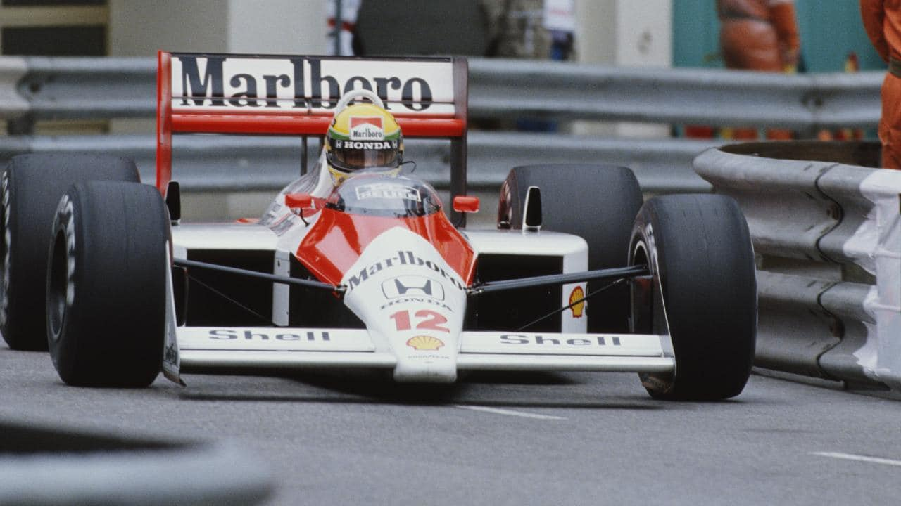

Ayrton Senna da Silva
The legend

- 1960-he was born in 21 March 1960 Ayrton Senna da Silva
São Paulo, Brazil
- 1977-attended Colegio Rio Branco in the São Paulo neighbourhood of Higienópolis and graduated with a grade 5 in physics along with other grades in mathematics, chemistry, and English.
- 1977-Senna went on to win the South American Kart Championship.
He contested the Karting World Championship each year from 1978 to 1982, finishing runner-up in 1979 and 1980.[18] In 1978, he was the teammate of Terry Fullerton, from whom Senna later felt was the rival he got the most satisfaction racing against also because of the lack of money and politics at that level
- 1981-moved to England to begin single-seater racing, winning the RAC and Townsend-Thoreson Formula Ford 1600 Championships that year with the Van Diemen team.
- 1982-after a short period of moving out and back to England, he came back and won the British and European Formula Ford 2000 championships. For that season, Senna arrived with sponsorship from Banerj and Pool.
- 1983-Senna drove in the British Formula Three Championship for the West Surrey Racing team. He dominated the first half of the season until Martin Brundle, driving a similar car for Eddie Jordan Racing, closed the gap in the second part of the championship. Senna won the title at the final round after a closely fought and, at times, acrimonious battle with the Briton.
In the same year, Senna also triumphed at the inaugural Macau Formula 3 Grand Prix with Teddy Yip's Toyota-powered Theodore Racing Team
- 1984-Senna made his debut at the Brazilian Grand Prix in Rio de Janeiro, where he qualified 17th, but retired when the Hart 415T turbocharger failed on lap 8. He scored his first World Championship point in his second race at the South African Grand Prix at Kyalami with severe muscle spasms, and replicated that result two weeks later at the Belgian Grand Prix.
- 1985-Senna was partnered in his first year at Lotus-Renault. At the second round of the season, he took the first pole position of his Formula 1 career. He won the race and set the fastest lap of the race.
- 1988-due to the relationship he had built up with Honda throughout the 1987 season with Lotus, and with the approval of McLaren's number-one driver and then-double world champion, Alain Prost, Senna joined the McLaren team.
In the same year he won his first Formula One world championship title by taking eight wins to Prost's seven.
- 1990-Senna took a commanding lead in the championship with six wins, two-second places, and three-thirds. With Prost gone to Ferrari, he also had a new teammate in Austrian driver Gerhard Berger.
- 1991-becomes the youngest ever three-time world champion, taking seven wins and increasing his pole position record to 60 from 127 events.
- 1992-Senna scored wins in Monaco, Hungary, and Italy that year. During qualifying for the Belgian Grand Prix, French driver Érik Comas crashed heavily and Senna was the first to arrive at the scene. He exited his car and ran across the track to help the Frenchman, disregarding his own safety in an effort to aid a fellow driver. He later visited Comas in the hospital. His actions won universal praise from within Formula One and seemed to soften his hard-nosed image. Senna finished fourth overall in the championship, behind the Williams duo of Mansell and Riccardo Patrese, and Benetton's Michael Schumacher.
Questions about Senna's intentions for the upcoming 1993 season lingered throughout 1992, as he did not have a contract with any team by the end of that year. Ferrari had offered him a contract which Senna discussed with Niki Lauda, but decided to decline the offer.
- 1993-attempts by McLaren boss Ron Dennis to secure a supply of the dominant Renault V10 engines failed.[90] Similarly, Senna's offers to drive for Williams-Renault for free also failed
But 1993 was also the last year racing for McLaren, finishing second after Prost in the overall championship
- 1994-Senna was able to finally join the Williams team after Prost retired[106] and was reportedly paid a $20 million salary.[107] With Prost's retirement at the end of 1993, and Williams's consequential lack of a defending World Champion carrying race number 1 for a second year running, Senna would race in 1994 with number 2 and teammate Damon Hill would race with number 0 for the second year in a row.
Due banning of the active suspension, traction control, and ABS, Senna expressed his discomfort with the handling of his car, stating, "I have a very negative feeling about driving the car and driving it on the limit and so on ... Some of that is down to the lack of electronic change. Also, the car has its own characteristics which I'm not fully confident in yet."
Senna further added, "It's going to be a season with lots of accidents, and I'll risk saying that we'll be lucky if something really serious doesn't happen."
- 1994-The 1994 season was the subject of sweeping rule changes, most notably banning the use of electronic "driver aids" such as active suspension, anti-lock brakes, traction control and launch control. From the start, suspicion of foul play mainly involving the Benetton team was said to have troubled Senna. For example, instead of returning to the pit area after his first lap retirement at the Pacific Grand Prix, Senna opted to stand near the first corner and watch the cars complete the race to see if he could detect whether any now banned traction control system was being used.
He returned to the Williams box after the race suspicious that the Benetton car was illegal.[114] Indeed, in an interview for the 20th anniversary of Ayrton Senna's death, his then teammate, Damon Hill, revealed that Senna had "concluded that there was, what he regarded, as unusual noises from the engine" with "special tweak" giving Benetton an advantage.
The season ended at the Australian Grand Prix in Adelaide, where the first-corner chicane at the Adelaide Street Circuit was renamed the "Senna Chicane". Schumacher went on to win the driver's world championship title controversially after a collision that forced his retirement and that of his rival, and Senna teammate, Damon Hill. At the official FIA conference after the race, the German dedicated his title to Senna.
- 1994-Senna died aged 34 after succumbing to fatal injuries sustained during his race at the San Marino Grand Prix, on 1 May 1994.